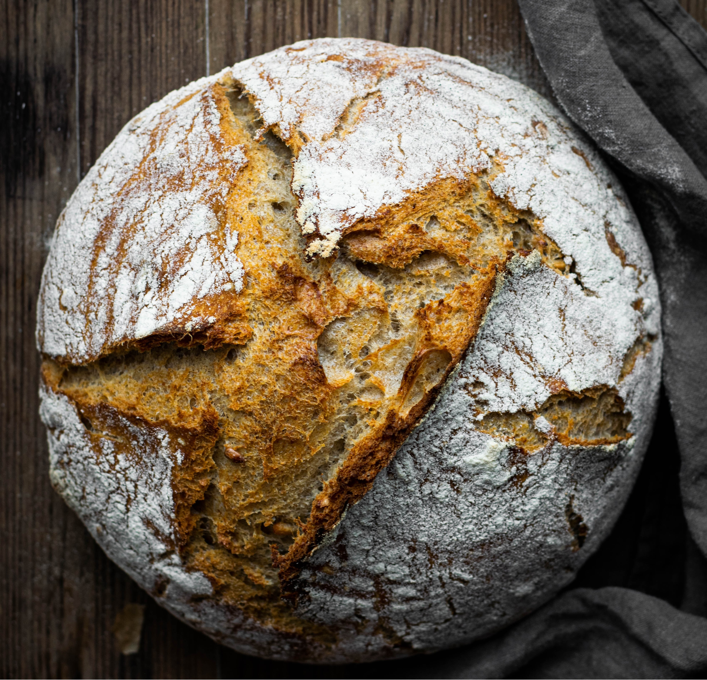

Brot
Zutaten:
- 500 g Weizenmehl
- 1 Päckchen Trockenhefe
- 1 Teelöffel Salz
- 300 ml lauwarmes Wasser
- 1 Esslöffel Olivenöl
Zubereitung:
Mischen Sie das Mehl, die Trockenhefe und das Salz in einer Schüssel. Fügen Sie nach und nach das lauwarme Wasser hinzu und kneten Sie den Teig für etwa 10 Minuten. Lassen Sie den Teig eine Stunde lang gehen und backen Sie ihn dann bei 200°C für 30-35 Minuten. Lassen Sie das Brot abkühlen, bevor Sie es anschneiden.